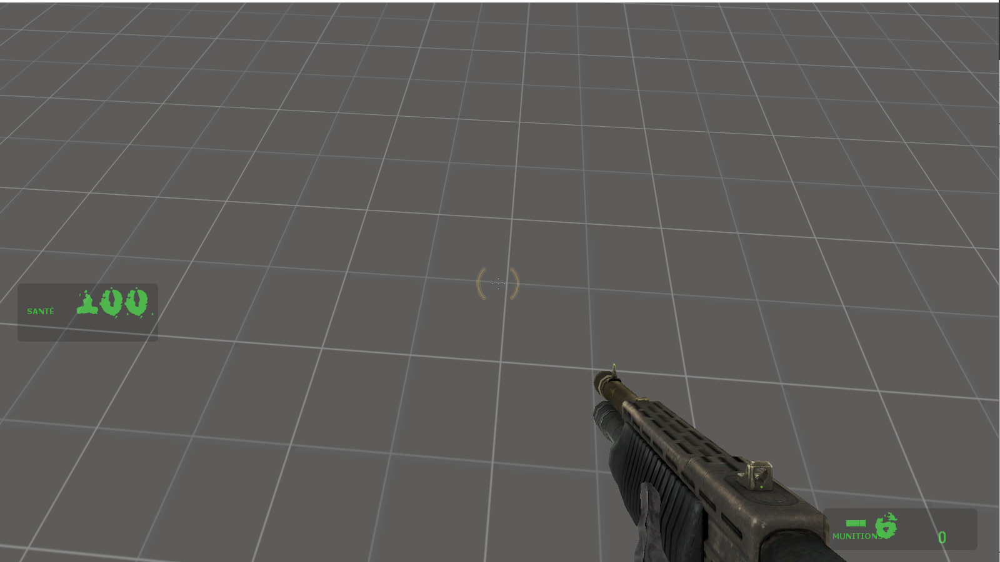
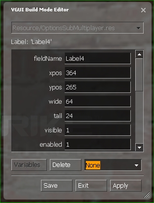
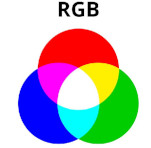
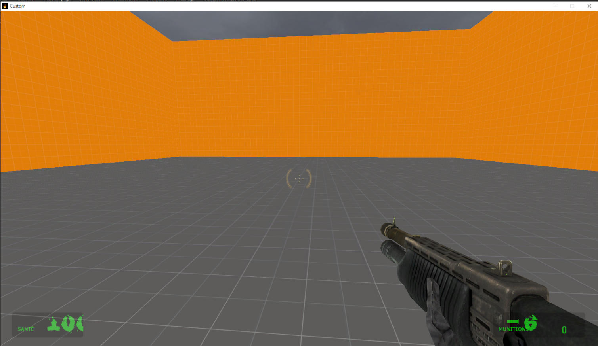

Textes ,langues et ressources
Ce chapitre a pour but d'apprendre à utiliser les données contenues dans le dossier «Ressource» du mod, ces fichiers correspond beaucoup où sont placés les textes, dans quelle police.
| File | Description |
|---|---|
gameinfo.txt |
Set mod title, icon, and other settings |
maplist.txt |
List maps used by the mod |
Resource/SourceScheme.res |
Change GUI appearance |
resource/gamemenu.res |
Change the UI menu buttons. See Manipulating the game menu items |
scripts/titles.txt |
Set some localized strings. See Adding chapters to your mod |
scripts/ChapterBackgrounds.txt |
List the chapter background images (used until background map is loaded). See Adding chapters to your mod |
scripts/kb_act.lst |
Set the contents of the Keyboard tab of the Options menu. |
cfg/config_default.cfg |
Set the default keyboard layout |
cfg/user_default.scr |
Add convars to the multiplayer advanced tab. |
Server Settings GUI |
Edit the local and dedicated server settings pages. |
Changer la police du jeu
Nous avons besoin d'un d'avoir un fichier .ttf, aller dans «ressource/clientscheme.res»
CustomFontFiles
{
"1" "resource/Xposed.ttf"
}
Ajouter votre police dans la liste, vous pouvez changer maintenant utiliser cette police, nous pouvons changer la police du titre du jeu
ClientTitleFont
{
"1"
{
"name" "Xposed"
"tall" "32"
"tall_hidef" "46"
"weight" "0"
"additive" "0"
"antialias" "1"
"custom" "1" [$OSX]
}
}
Changer le menu
Dans le fichier «ressource/gamemenu.res»
"label" "Resume Game" //*Texte afficher*
"command" "ResumeGame" *//commande dans la console*
"OnlyInGame" "1" *//Ne s'affiche que en jeu (ex: sauvegarde )*
"notmulti" "1" //Ne s'affiche pas si multijoueur
Interface utilisateur
https://developer.valvesoftware.com/wiki/HudLayout.res
L'interface utilisateur est codé en C++ avec la bibliothèque VGUI qui permet de définir les priorités de la fenêtre, c'est ensuite à nous de modifier les variables avec le fichier scripts/hudlayout.res et définir les animations avec hudanimation.txt.
Modifier l'affichage des points de vie
"Resource/HudLayout.res"
{
HudHealth [$WIN32]
{
"fieldName" "HudHealth"
"xpos" "16"
"ypos" "432"
"wide" "102"
"tall" "36"
"visible" "1"
"enabled" "1"
"PaintBackgroundType" "2"
"text_xpos" "8"
"text_ypos" "20"
"digit_xpos" "50"
"digit_ypos" "2"
}

Modifier une fenêtre VGUI
Mettre votre souris sur une fenêtre et faire SHIFT+CTRL+ALT+B. Vous ouvrez le VGUI Build Mode Editor permettant de modifier une fenêtre.

Dans le fichier «ressource/clientscheme.res» nous pouvons modifier où est affiché le logo du jeu dans le menu.
On modifie sa position en X et Y les chiffres correspondent au pixel.
// Top-left corner of the \"Half-Life 2\" on the main screen
"Main.Title1.X" "53"
"Main.Title1.Y" "190"
"Main.Title1.Y_hidef" "184"
"Main.Title1.Color" "255 255 255 255"
Pour Changer la couleur des menus, dans le fichier «ressource/clientscheme.res».
Les 4 arguments correspond à dans l'ordre Rouge, Vert, Bleu et opacité (transparence) avec une valeur comprise entre 0 et 255 (Pour un octet, un octet fessant 8 bits, cela nous fait 2\^8=256 possibilités différentes).

///////////////////// BASE SETTINGS ////////////////////////
//
// default settings for all panels
// controls use these to determine their settings
BaseSettings
{
"FgColor" "0 255 0 100"
"FgColor_vrmode" "0 255 0 200"
"BgColor" "0 0 0 76"
"Panel.FgColor" "0 255 0 100"
"Panel.BgColor" "0 0 0 76"
"BrightFg" "0 255 0 255"
"DamagedBg" "180 0 0 200"
"DamagedFg" "180 0 0 230"
"BrightDamagedFg" "255 0 0 255"
// weapon selection colors
"SelectionNumberFg" "0 255 0 255"
"SelectionTextFg" "0 255 0 255"
"SelectionEmptyBoxBg" "0 0 0 80"
"SelectionBoxBg" "0 0 0 80"
"SelectionSelectedBoxBg" "0 0 0 80"
"ZoomReticleColor" " 255 220 0 255"
// HL1-style HUD colors
"Yellowish" "0 255 0 255"
"Normal" "255 208 64 255"
"Caution" "255 48 0 255"
